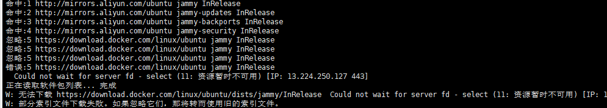
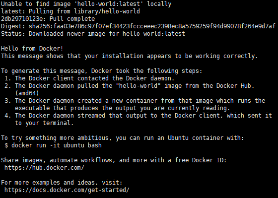
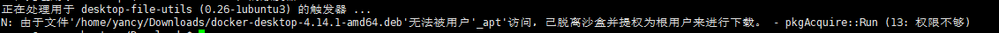
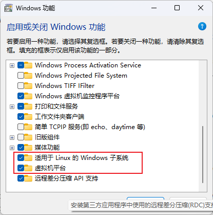
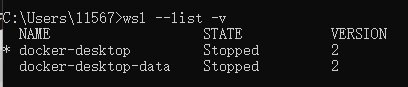
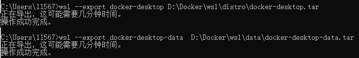
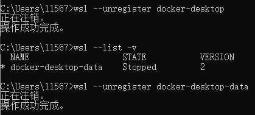
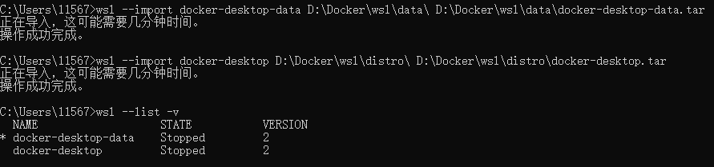
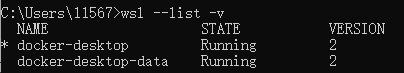

Docker-Desktop在linux以及Windows的安装
Docker
Docker安装记录
Docker安装
在这里采用Docker仓库安装，一开始我使用curl自动安装脚本，后续我在Linux机器上想安装Docker Desktop，就发现一个问题。。！！！Docker无法卸载干净，所以在这里用仓库安装方法。
安装需求：
我只解决了两个问题，其他问题并未太在意，在后续安装没有遇到问题。
CPU虚拟化
虚拟机在虚拟机设置界面起开，否则进入BIOS在安全界面开启CPU Vrtualization
KVM虚拟化支持(开启CPU自动开启)
安装步骤：
Linux
从Docker仓库下载Docker
移除老版本
1 | sudo apt-get remove docker docker-engine docker.io containerd runc |
设置Docker仓库
1 | 更新索引 |
添加Docker官方GPG key
1 | sudo mkdir -p /etc/apt/keyrings |
设置仓库
1 | echo \ |
更新索引
1 | sudo apt-get update |
在这里我遇到了一个问题

解决如下：修改resolv.conf中的DNS
1 | sudo vim /etc/resolv.conf |
添加两个域名服务器
1 | nameserver 223.5.5.5 |
再次更新索引 >>>> 成功
下载Docker
1 | 下载最新版 |
拉去测试镜像测试
1 | sudo docker run hello-world |

我在安装Docker-Desktop后，就可以不使用sudo了。。。并且与sudo显示的目录不同
安装Docker-Desktop
我安装了图形化Ubuntu暂作服务器使用，所以安装了Docker Desktop
安装必要组件以及清理早期版本
1 | sudo apt install gnome-terminal |
下载 Docker-Desktop安装包
我在下载后通过XFTP传输至了服务器
1 | 更新索引 |

接下来就可以在桌面使用Docker-Desktop客户端了
在这里我遇到了个情况。。。在Docker-Desktop启动后，不需要在cmd命令中使用sudo了。。。并且sudo情况下与不加的情况下，所看的镜像不同。
推荐教学及配套文档
Windows
安装Docker-Desktop
目前Winows下Docker-Desktop是通过wsl进行管理
开启Windows功能

注：会与VM16中虚拟机CPU虚拟化冲突
安装WSL
再次下载官方下载安装即可
问题
镜像源
添加docker镜像源
解决：添加registry-mirrors
打包报错
failed to solve with frontend dockerfile.v0: failed to create LLB definition: unexpected status code [manifests 11]: 403 Forbidden
解决：buildkit : false
1 | { |
Windows安装位置
参考
Windows是通过wsl安装了docker虚拟机，可以通过更改wsl导入和导出，将docker移动到其他磁盘，节省C盘空间
关闭Docker-Desktop
右键小鲸鱼，quit

导出至指定目录
1 | wsl --export <Distribution Name> <FileName> |

注销虚拟机
1 | wsl --unregister <DistributionName> |

导入指定目录的打包文件

1 | wsl --import-in-place <Distribution Name> <FileName> |
重新启动Docker-Desktop
双击运行即可
补充：指定默认Linux发行版本
1 | # 应该是不影响使用的。 |

Portainer
Powerful container management
Docker图形化界面可以简化一些操作，但图形化界面更方便更直观哇咔咔
Docker Desktop只可以在主机上使用，但安装Portainer，可以将服务暴露出来，提供Web界面的管理界面
创建容器
1 | docker volume create portainer_data |
运行容器(。。当然是社区免费版)
1 | docker run -d -p 8000:8000 -p 9443:9443 --name portainer --restart=always -v /var/run/docker.sock:/var/run/docker.sock -v portainer_data:/data portainer/portainer-ce:latest |
By default, Portainer generates and uses a self-signed SSL certificate to secure port
9443. Alternatively you can provide your own SSL certificate during installation or via the Portainer UI after installation is complete.If you require HTTP port
9000open for legacy reasons, add the following to yourdocker runcommand:
嗯。。。我的当然还是HTTP
开启防火墙端口
1 | sudo ufw allow 9000/tcp |